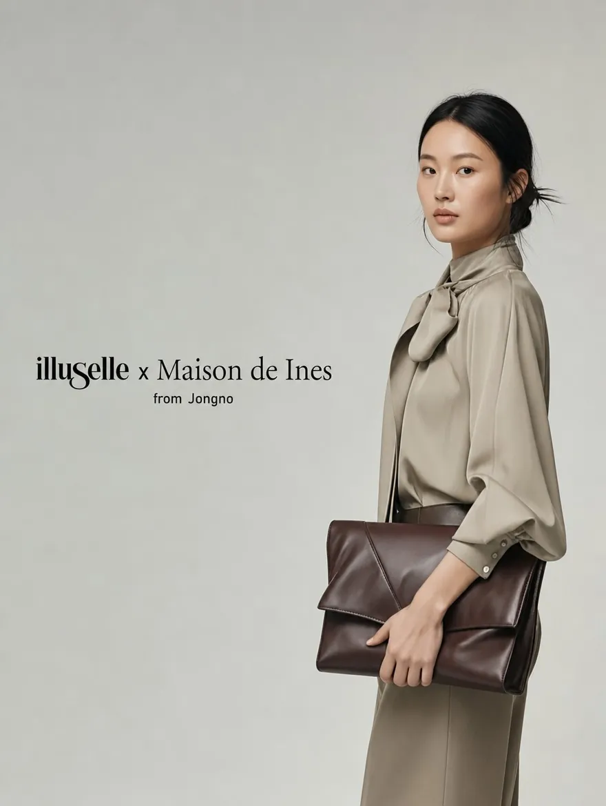

옥외 전광판용 브랜드 영상
메종드이네스 · 광화문 KT스퀘어 OOH
광화문 KT스퀘어 대형 전광판을 위한 브랜드 영상입니다. 그레이디랩이 옥외 미디어월 맞춤 연출 기획, AI 비주얼 생성, 영상 편집과 마스터링을 총괄했습니다.
담당 범위와 제작 내용 보기 ↗홈 / 리테일·매장 사이니지·OOH 영상 제작
GRaY D. Lab · AI VIDEO PRODUCTION STUDIO
리테일·OOH 영상은 매장 내부 화면이나 옥외 전광판의 물리적 환경에서 보여주는 콘텐츠입니다. 그레이디랩은 화면 규격, 관람 거리와 주변 조도를 고려해 AI 비주얼과 편집 방향을 정합니다.
온라인 화면에서 잘 보이는 디테일이 옥외 환경에서도 동일하게 읽히는 것은 아닙니다. 메종드이네스 OOH에서는 정밀 업스케일링과 고대비 컬러 그레이딩을 적용해 의상 텍스처와 브랜드 무드의 시인성을 고려했습니다.

옥외 전광판용 브랜드 영상
광화문 KT스퀘어 대형 전광판을 위한 브랜드 영상입니다. 그레이디랩이 옥외 미디어월 맞춤 연출 기획, AI 비주얼 생성, 영상 편집과 마스터링을 총괄했습니다.
담당 범위와 제작 내용 보기 ↗백화점 미디어월·모바일용 납품
신세계 사계·타임스퀘어 패션 필름 및 디지털 매거진 프로젝트입니다. 그레이디랩이 콘셉트 기획, 스토리보드 연출, AI 이미지·영상 생성, 후반 편집과 BGM 마스터링을 총괄했습니다.
담당 범위와 제작 내용 보기 ↗합의된 매체 규격의 영상 마스터를 제공합니다. 다면 화면·온라인 재편집·추가 규격은 별도 협의하며, 매체 구매나 송출 운영은 영상 제작 범위와 구분합니다.
일정·가격·해상도·수정 횟수와 사용 범위는 프로젝트별 협의 사항입니다.
전광판마다 실제 픽셀 규격과 화면 비율이 다릅니다. 특정 해상도를 일괄 약속하기보다 매체사의 규격을 먼저 확인해야 합니다.
가능한 화면 구성과 추가 버전 범위를 먼저 검토합니다. 옥외용 구성을 그대로 자르기보다 모바일에서 읽히는 크기와 편집을 따로 확인합니다.